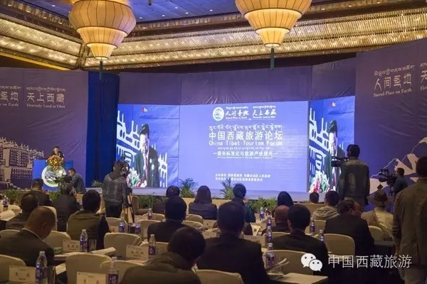

西藏日报

9月13日上午，第三届藏博会旅游分论坛在拉萨举行，论坛主题为“旅游服务标准化与产业提升”。
国家旅游局副局长魏洪涛出席，区党委常委、自治区常务副主席丁业现致辞，自治区副主席边巴扎西主持，自治区副主席何文浩、自治区政府主席助理罗梅出席。
丁业现首先代表自治区党委、政府向参加论坛的专家学者和各界嘉宾表示热烈欢迎，向长期以来关心支持西藏经济社会发展特别是为西藏旅游事业发展作出贡献的各界人士表示衷心感谢。
丁业现指出，多年来，我区始终着眼构建重要的世界旅游目的地，着力将旅游文化产业打造成战略支撑产业，深刻把握旅游文化发展规律和特色优势，突出高端、精品、特色主线，旅游已成为西藏经济建设的重要支撑、社会就业的重要渠道、群众增收的重要抓手、对外交流的重要平台，成为展示社会主义新西藏、新生活、新发展的重要窗口。
大会上丁业现提出：“希望与会嘉宾畅所欲言，不吝赐教，为西藏旅游发展建言献策，为西藏旅游服务标准化建设贡献智慧，帮助我区不断提升旅游服务水平，丰富产业发展内涵，更好更快地建设重要的世界旅游目的地。”同时他强调，今年是西藏旅游服务标准化建设年，标志着我区旅游进入转型升级、提质增效的发展新阶段。
此次论坛的主题充分体现了我区对西藏旅游发展进程的深刻把握，对提升发展质量和效益的高度重视。